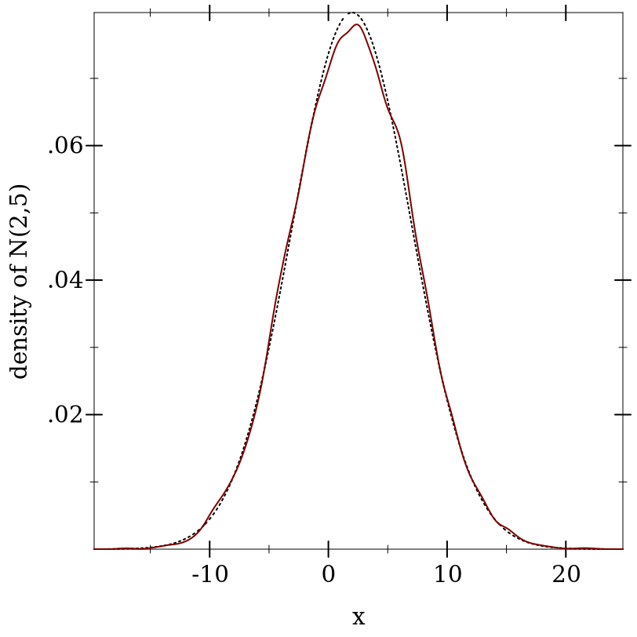
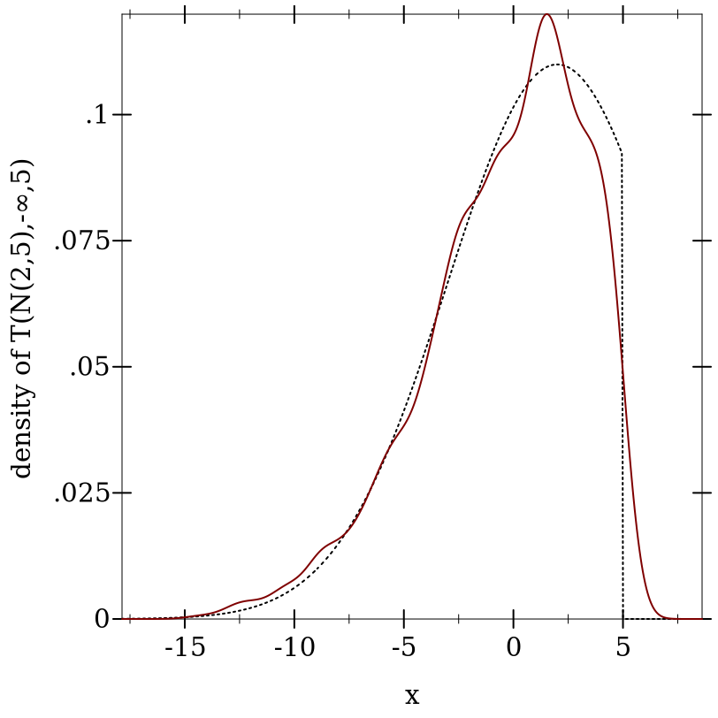
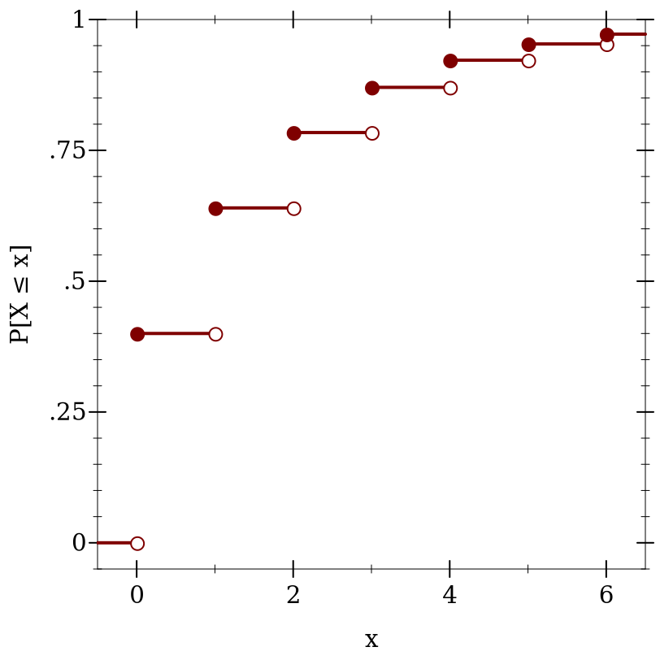

9.1 分布对象
distribution object 代表一个共同领域的概率分布,如实数、整数或一组符号。 它们的构造函数对应于分布族,如正态分布族。
一个分布对象,或一个 dist 类型的值,有一个密度函数 (pdf)和一个生成随机样本的程序。 一个 ordered 分布对象,或一个 ordered-dist 类型的值,还具有一个累积分布函数 (cdf), 以及它的广义逆 (inverse cdf)。
下面的例子创建了一个有序分布对象,代表一个均值为 2、标准差为 5 的正态分布,
计算了半开区间(1/2,1)的概率近似值,并从随机样本中计算了另一个近似值:
> (define d (normal-dist 2 5)) > (real-dist-prob d 0.5 1.0) 0.038651712749849576
> (define xs (sample d 10000))
> (fl (/ (count (λ (x) (and (1/2 . < . x) (x . <= . 1))) xs) (length xs))) 0.0391
这张图是 pdf 和来自随机样本的 pdf 的核密度估计:
> (plot (list (function (distribution-pdf d) #:color 0 #:style 'dot) (density xs)) #:x-label "x" #:y-label "density of N(2,5)") 
还有一些高阶分布,它们以其他分布作为构造参数。
例如,截断分布族返回一个与它的分布参数相似的分布,但将区间外的概率设置为 0,并将区间内的概率重新规范化:
> (define d-trunc (truncated-dist d -inf.0 5)) > (real-dist-prob d-trunc 5 6) 0.0
> (real-dist-prob d-trunc 0.5 1.0) 0.0532578419490049
> (plot (list (function (distribution-pdf d-trunc) #:color 0 #:style 'dot) (density (sample d-trunc 1000))) #:x-label "x" #:y-label "density of T(N(2,5),-∞,5)") 
因为实数分布的 cdfs 表示概率 P[X ≤ x], 所以它们是右连续的(即 从右边 连续):
> (define d (geometric-dist 0.4))
> (plot (for/list ([i (in-range -1 7)]) (define i+1-ε (flprev (+ i 1.0))) (list (lines (list (vector i (cdf d i)) (vector i+1-ε (cdf d i+1-ε))) #:width 2) (points (list (vector i (cdf d i))) #:sym 'fullcircle5 #:color 1) (points (list (vector i+1-ε (cdf d i+1-ε))) #:sym 'fullcircle5 #:color 1 #:fill-color 0))) #:x-min -0.5 #:x-max 6.5 #:y-min -0.05 #:y-max 1 #:x-label "x" #:y-label "P[X ≤ x]") 
为了方便起见,cdfs 是在扩展实数上定义的,而不考虑其分布的支持度,但它们的倒数只返回支持度内的值:
> (cdf d +inf.0) 1.0
> (cdf d 1.5) 0.64
> (cdf d -inf.0) 0.0
> (inv-cdf d (cdf d +inf.0)) +inf.0
> (inv-cdf d (cdf d 1.5)) 1.0
> (inv-cdf d (cdf d -inf.0)) 0.0
一个分布的逆 cdf 定义在区间[0,1]上,并且总是左连续的,
除了当它的支持在左边受限时可能在 0 处(如 geometric-dist) 。
每个pdf和cdf都可以返回对数密度和对数概率,以防密度或概率太小而无法用 flonums 表示(即小于 +min.0):
> (define d (normal-dist)) > (pdf d 40.0) 0.0
> (cdf d -40.0) 0.0
> (pdf d 40.0 #t) -800.9189385332047
> (cdf d -40.0 #t) -804.6084420137538
此外,每个cdf都可以返回上尾概率,当下尾概率大于 0.5 时,上尾概率总是更准确:
在概率太小的情况下,上尾概率也可以作为对数概率返回:
逆向cdfs接受对数概率和上尾概率。
函数 lg+ 和 lgsum 以及 math/flonum 中的其他函数对对数概率进行运算。
> (pdf (gamma-dist -1 2) 2) +nan.0
> (sample (poisson-dist -2)) +nan.0
> (cdf (beta-dist 0 0) 1/2) +nan.0
> (inv-cdf (geometric-dist 1.1) 0.2) +nan.0